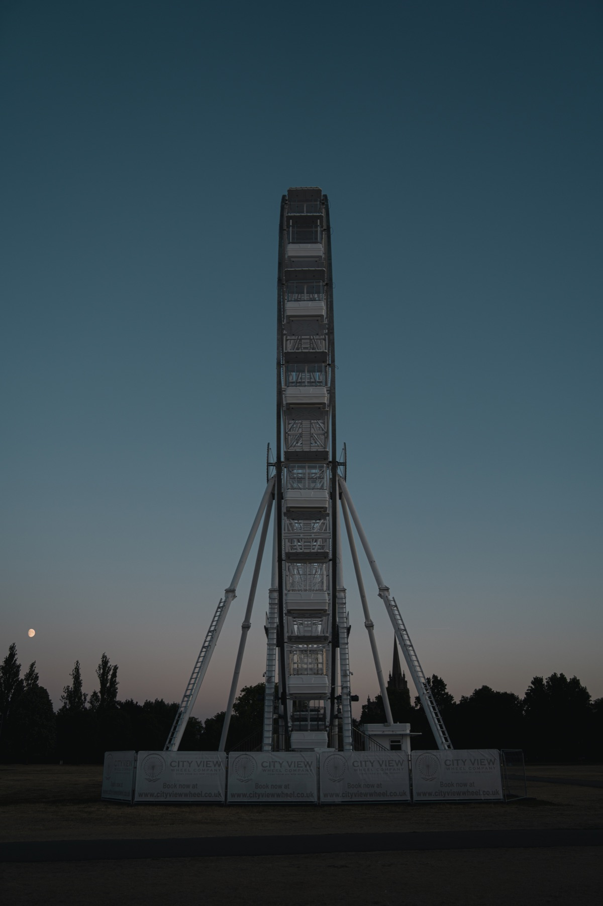
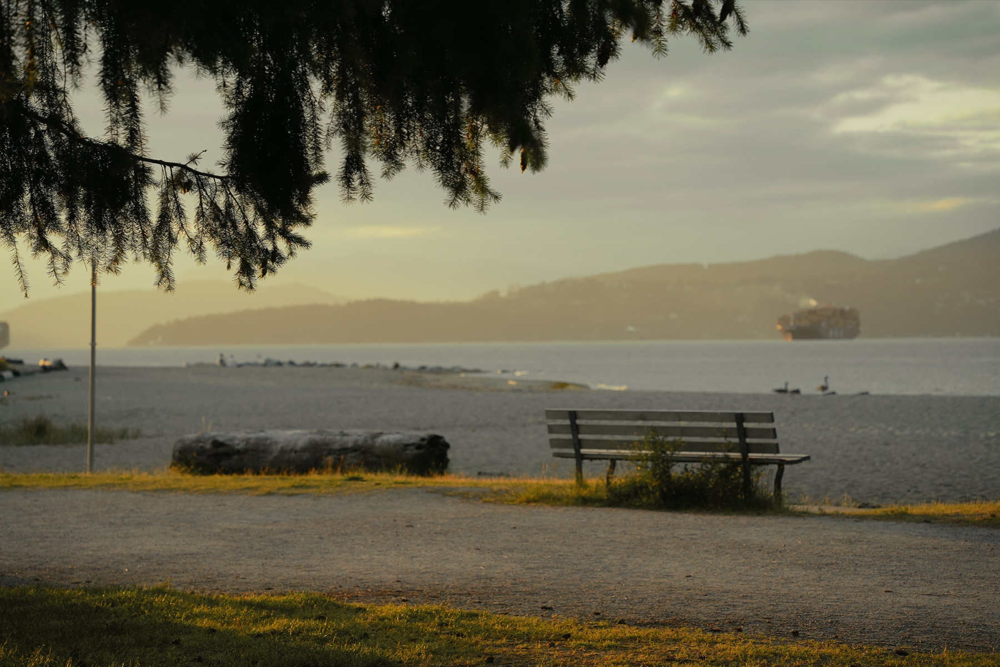

01
Prompt Studio
一个用于比较 prompt 版本、记录输出差异和复盘判断的小工作台。
View
AI Vibe Coding / Photography Portfolio
我用 AI 做实验，用文字整理判断，用摄影保存观看。 这个 portfolio 从一次对焦开始。
Selected Work
AI Experiments

Warm light, distance, and the space between things.
Photography Portfolio
About